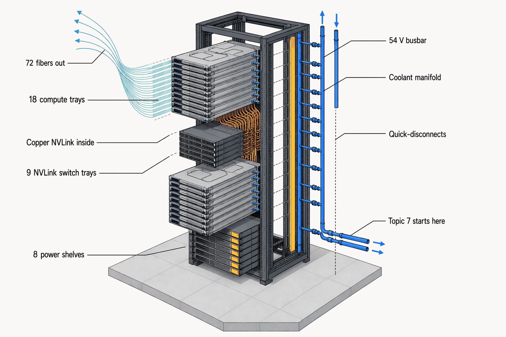
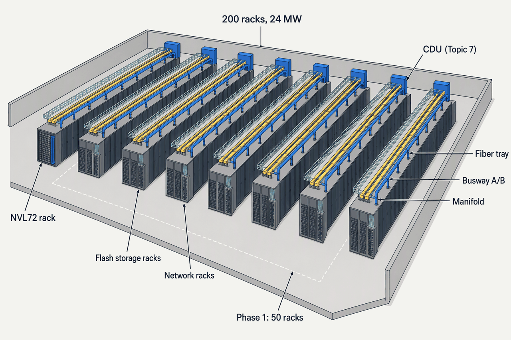
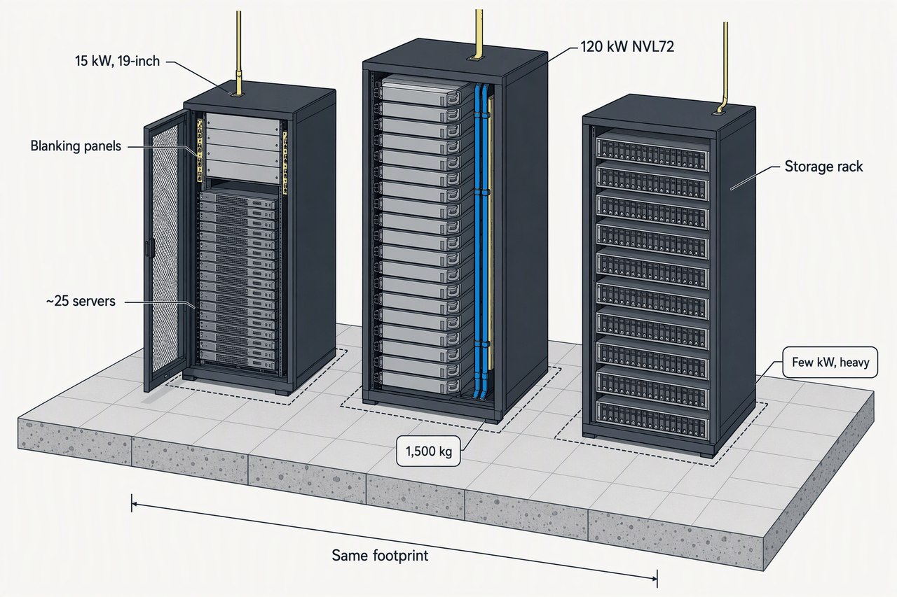
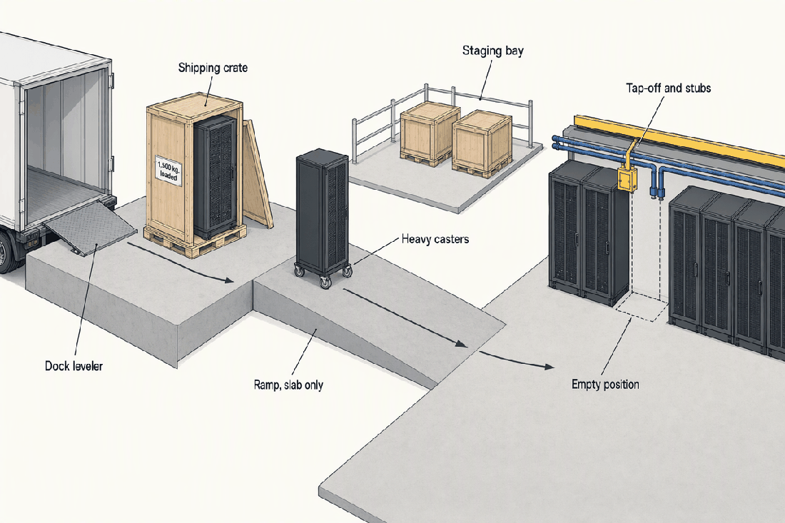

AI and HPC Infrastructure, Compute and Storage
Deep detail and sources: the appendix for this topic. Short version: sixty words.
Topics 5 to 7 built the power and cooling; this chapter is about what they feed. For 800 of the reference hall's racks that is servers and storage of the kind the industry has racked for forty years. For the other 200 it is one class of factory-built machine that sets the hall's power, weight, cooling, network and cost, and moves its load in lockstep about once a second.
- 120–142 kWOne NVL72-class rack, GB200 to GB30013–15× the ~9 kW modal rack (Uptime 2025)
- 72 + 36GPUs and CPUs in one rack, behaving as one acceleratorThe rack is the server
- ~1 HzLockstep swing of a training cluster between compute and all-reduceHundreds of MW at gigawatt scale
- ~130 L/minCoolant per rack at the quick-disconnectsTopic 7 starts there
- ~$3MPer rack, so ~$600M of IT inside a $260–480M podThe building is the cheap part
- 3–6GPU generations inside one 15–20 year buildingTwo clocks, one lease
The rack is the server

Topic 7 owns everything that moves heat, from the cold plate or rack inlet to the outside air, including the CDU and its facility-water loop; Topic 8 owns what generates the heat: the servers, accelerators, storage and the rack they sit in, up to the cold plate and the rack's coolant quick-disconnects. One power input, one coolant interface, one fabric edge: one machine.
The rack's inventory, top to bottom
- 18 compute trays, each 4 GPUs and 2 Grace CPUs with cold plates and dripless quick-disconnects to the in-rack manifold.
- 9 NVLink switch trays forming the all-to-all copper backplane, ~3.2 km of copper, 130 TB/s, no optics.
- 8 power shelves of ~33 kW (six 5.5 kW PSUs each) feeding a 50–54 V DC busbar; GB300 shelves carry the 65 J per GPU capacitors.
- Vertical supply and return manifold with per-tray quick-disconnects.
- One 800 Gb/s NIC per GPU, plus DPUs and local NVMe; copper inside, fiber out (APX-compute §1, APX-compute §3).
| System | Accelerators | kW per rack | kg | Scale-out ports | Ships |
|---|---|---|---|---|---|
| GB200 NVL72 | 72 Blackwell + 36 Grace | ~120 nominal; 130–132 observed | ~1,360 | 72 × 400 Gb/s | Q1 2025 |
| GB300 NVL72 | 72 B300 + 36 Grace | 132–142; ~155 peak | ~1,580 populated | 72 × 800 Gb/s | Mid-2025 |
| Vera Rubin VR200 NVL72 / NVL144 | 72 packages, 144 dies + 36 Vera | ~120–190 | ~1,500+ | 72 × 800+ Gb/s | H2 2026 |
| AMD Helios MI455X | 72 MI455X + 18 EPYC | ~100+ kW class, double-wide | ORW frame | 800 Gb/s Vulcano | Volume ~Q2 2027 |
| Google TPU v7 Ironwood | 9,216 per pod | Pod-scale | OCS-connected pod | ICI 9.6 Tb/s per chip | GA 2025, Google only |
The pod's 120 kW is GB200's number, and every rack on this table that ships after Hall 1's design freeze exceeds it. The pod must be an envelope with headroom, not a footprint for one SKU (APX-compute §1).
| Attribute | EIA-310 19-inch | OCP ORv3 | Open Rack Wide |
|---|---|---|---|
| Mounting | 19 in; 1U = 44.45 mm | 21 in; 1 OpenU = 48 mm; 19 in via adapter | Double-wide for accelerator trays |
| Height | 42–52U | ~44 OpenU, 2,286 mm | Tall AI frame |
| Power | AC rack PDUs, A/B | 48 V busbar; ~18 kW shelves, 15 kW N+1, ~33 kW multi-shelf | Higher, plus liquid |
| Load, static / dynamic | ~1,360 / ~1,020 kg typical | ~1,600 / ~1,400 kg | ~1,400 kg class |
| Where | The 8 and 15 kW zones | Hyperscale, OCP fleets | AMD Helios, Meta AI pods |
The 19-inch standard fixes width, U-height and hole pattern; depth, load rating and power are the maker's. The AI zones inherit Topic 6's busbar and shelf; the general zones keep the forty-year-old cabinet (APX-compute §3).
One machine, not 200
- Job launch
- near idle
- Rate-limited ramp
- deliberate, to protect the grid
- Sustained compute
- 90–100% of ~120 kW per rack, for hours
- ~1 Hz swings, compute to all-reduce
- more than half of TDP moves within milliseconds
- Checkpoint write stalls
- the load drops while the state is saved
- Tail-off, dummy load, next job
An enterprise hall diversifies because 200 tenants never peak together. A training pod is 200 racks running one bulk-synchronous job, so design load and actual load converge; Topic 2's diversified design load is valid for 800 racks and void for these 200 (APX-compute §4).
Cluster sizes as calibration
| GPUs | NVL72 racks | IT load |
|---|---|---|
| 1,000 | ~14 | ~1.7–2 MW |
| 3,600, Phase 1 | 50 | ~6 MW |
| 10,000 | ~139 | ~17–19 MW |
| 14,400, the reference pod | 200 | 24 MW |
| 100,000 | ~1,390 | ~170–195 MW |
For calibration, xAI's Colossus reached 100,000 Hopper GPUs at 64 per rack and ~150 MW, then ~250 MW at 200,000 GPUs.
The load is not just big, it is dynamic in a frequency band that fatigues turbine shafts. The rack's own capacitors shave the peak the grid sees and do nothing for the UPS, the subtle point first-time planners miss (APX-compute §4).
The fixes, and what each one does not do
| Fix | Numbers | Does not |
|---|---|---|
| GB300 power-shelf capacitors | 65 J per GPU, ~4.7 kJ per rack, about half the shelf volume; ~30% peak cut on Megatron, shelf co-designed with LITEON | Ride through anything; no UPS relief |
| Software floors and ramp caps | GPUs held near 90% of rated during all-reduce; startup caps; Meta's pytorch_no_powerplant_blowup=1 dummy load | Remove the swing; it burns energy to hide it |
| GPU power capping | A lower ceiling for less throughput | Change the shape |
| MWh storage, peak shaving | Topic 5 | Come free |
Why it is regulated now: NERC's Level 3 alert of 4 May 2026 followed a July 2024 Northern Virginia event that tripped ~1.5 GW of load in seconds.
The reference pod
| Item | Per rack | Phase 1, 50 racks | Full pod, 200 racks |
|---|---|---|---|
| GPUs | 72 | 3,600 | 14,400 |
| Grace CPUs | 36 | 1,800 | 7,200 |
| IT load | 120–142 kW | ~6 MW | 24 MW |
| Coolant at the quick-disconnects | ~130 L/min | ~6,500 L/min | ~26,000 L/min |
| Scale-out fiber links | 72 | ~3,600 | ~14,400 |
| Mass, wet | ~1.5 t | ~75 t | ~300 t |
| Storage | In-rack NVMe | A few flash racks | A handful; hundreds of GB/s to ~TB/s |
| Busway interface | A/B tap-offs; 120 kW nominal, ~155 kW GB300 peak | Topic 6's headroom toward ~190 kW | Same |
Multiply one rack by 200 and every trade's number falls out: Topic 7's litres (APX-compute §2), Topic 9's fibers, Topic 4's tonnes (APX-compute §6). Topic 9 adds what the table omits: copper reach forces about one air-cooled 20–30 kW network rack per two GPU racks inside the pod, not counted in the 1,000 (APX-compute §5).

A pod is compute almost wall to wall with a sliver of storage and network at the head of each row. The fabric decides which racks are neighbours, and the CDUs at the row ends mark where this chapter's scope stops.
- IT hardware600200 racks × ~$3M, GB200-class; GB300 higher; replaced 3–5× over the building's life
- Facility to house 24 MW370midpoint of $260–480M at $11–20M/MW; built once
The building is the cheap part. The mental model of an expensive shell full of commodity servers inverts for AI, and that one ratio explains why allocation, lead time and refresh dominate the pod's economics (APX-compute §12).
Everything else
| Class | Accelerators | kW | kg | Cooling | Refresh |
|---|---|---|---|---|---|
| Two-socket CPU server | None | 0.3–1.0 loaded | 15–30; 1–2U | Air | 5+ yr |
| HGX 8-GPU node, B200 | 8 × ~1,000 W | ~10.2; to ~14.3 with system | ~90–130; 4–10U | Air with rear door, or liquid, in the 40 kW zone | 3–5 yr |
| Rack-scale NVL72, GB300 | 72 GPUs + 36 CPUs | 132–142 | ~1,400–1,580; the whole 48U rack | Direct-to-chip, mandatory | 2–3 yr cadence |
The CPU rack fills by power before U, the GPU node is a sub-rack, the NVL72 is the rack, and its refresh clock runs three times faster (APX-compute §7).
Inside the classes
- CPUs: AMD Turin to 192 cores at 500 W; Intel Xeon 6 to 128 P-cores or 288 E-cores at 500 W; DDR5 to 12 channels; CXL for memory expansion. At 0.5–0.7 kW a server, 20–30 fit a 15 kW rack.
- GPU TDP: H100 ~700 W → H200 ~1,000 W → B200/B300 1,000–1,400 W. HBM, not FLOPS, drives it.
- Power: 80 PLUS Titanium PSUs; GB300 shelves ~94.5% at full load. Dual-cording doubles the PSUs, so AI nodes often go single-corded.

Same square metre, three different buildings underneath. The compute rack is heavy in kW and moderate in kg, the storage rack the reverse, so one kg-per-kW rule serves neither and the explorer's mass rule breaks (APX-compute §10).
| Type | What it is | Where in the hall | Fabric demand | Rack demand | Who uses it |
|---|---|---|---|---|---|
| DAS | Disks inside the server | The compute rack | None | Trivial | Everyone |
| SAN: FC, iSCSI, NVMe-oF | Block over a dedicated network | Storage rows | Dedicated fabric | Moderate kW | Enterprise |
| NAS | File over IP | Storage rows | Shares Ethernet | Moderate | Enterprise |
| Object, S3 | Scale-out HTTP | Cold rows | Light | High TB, low kW | Archives, cloud |
| Disaggregated NVMe-oF, composable | Flash pooled over fabric; VAST DASE | Flash rows near compute | High bandwidth | Flash-dense | AI pods |
Storage is a facility fact by tier: flash rows near the pod, disk and tape rows wherever the floor is strong and the power is not. The pod is compute-heavy; the enterprise hall is storage-balanced (APX-compute §8).
What AI storage must deliver
- Media: Solidigm 122 TB QLC SSD ~0.20 W/TB; Seagate 30 TB HAMR HDD ~0.32 W/TB; Micron 245 TB SSD enables > 176 PB per rack.
- A parallel file system (Lustre, GPFS, WEKA, VAST): ~4 GB/s read per GPU; GPUDirect Storage 40+ GB/s; 512 GPUs ≈ 400–600 GB/s; checkpoints of 140–420 GB at 100 GB/s–1 TB/s.
- Ratio: a handful of storage racks per 50–200 GPU racks. The tenant owns the storage; data gravity keeps it where it lands.
| Layer | Who runs it | Runs on | Load shape | The owner sees |
|---|---|---|---|---|
| Hypervisors and VMs: VMware, KVM | Enterprise tenant | General servers | Many uncorrelated loads; historic utilisation 10–20% | Power, cooling and space telemetry only |
| Containers, Kubernetes | Cloud and enterprise | Everything that is not training | Diversified | Same |
| Slurm | HPC and the training cluster | Bare metal | One gang-scheduled job pinned at 90–100% | Same |
| Bare metal | AI training | Exposes GPU topology | Near nameplate | Same |
| Hybrid: Slinky, Slurm on Kubernetes | GPU clouds | Validated at 8,000+ GPUs | Both | Same |
The scheduler sets the load shape and the owner never sees it, so the lease, not the facility, must carry density. Checkpointing makes an outage cost one expensive job instead of many tenants; concurrent maintainability stays (APX-compute §9).
Two clocks
- enterprise mode, Uptime 20257.5–9 kW
- high-density colocation15–30 kW
- AI training, shipping40–142 kW
- announced roadmap190–600 kW
- reference zone8 kW
- reference zone15 kW
- reference zone40 kW
- reference pod, GB200 nominal120 kW
- GB200 observed132 kW
- GB300 nominal142 kW
- GB300 peak155 kW
- VR200 NVL144, H2 2026190 kW
- HPE busway provision192 kW
- 415 VAC and 54 VDC turn impractical200 kW
- Kyber on 800 VDC, 2027600 kW
The 120 kW pod is obsolete as a maximum on day one and sound as a design point; the failure mode is building only for 120 with no headroom path. Copper, not silicon, forces the jump to 800 VDC above ~200 kW, and Topic 6's sidecar bays are that path (APX-compute §10).
- 60% one-line and design freezeT+3–8The pod envelope: kW, kg, L/min, ports. No SKU
- Hall 1 live~T+42First tenant racks are whatever ships that year
- GPU generation 12–5 years, to ~T+72–102Hopper → Blackwell → Rubin ran ~30 months
- GPU generations 2 and 3through year 10Swapped under the lease, not the building
- M&E refresh10–15 yearsChillers, UPS and switchgear replaced once
- Shell15–20 years3–6 GPU generations inside it
Two clocks, one building. The rack class is chosen after the slab is poured and replaced before the chillers are, so the lease must let the tenant swap generations without stranding the owner's busway, manifolds and floor (APX-compute §11).
Delivery and risk
| Dimension | IT | Facility |
|---|---|---|
| Asset life | 3–5 years; GPUs faster | 15–20 years shell; 10–15 M&E |
| Scarcity gate | GPU allocation; HBM and CoWoS; forward orders | Grid interconnection, 5–6 year queues; water; land |
| Who supplies | NVIDIA and AMD via Supermicro, Dell, HPE | GC, MEP trades, utility |
| Lease shape | Powered shell or turnkey; tenant brings racks | Owner delivers kW, cooling, weight envelope |
| Who brings the CDU, manifold, rack, shelf | IT vendor to the quick-disconnect; here the owner brings the CDU | Facility beyond it |
The facility waits on the grid, the IT on allocation, and neither can hurry the other; the owner who reserved transformer slots at T+3 has no lever on GPUs (APX-compute §11).
Allocation in 2025–26
- Blackwell allocation is largely consumed by hyperscaler forward orders through 2026–27.
- H100 one-year rental rose ~40% to ~$2.35 per GPU-hour by March 2026, with new capacity booked through about September 2026.
- xAI's Colossus put 100,000 H100s live in 122 days and doubled in 92 more; factory-integrated racks made it possible.

The rack ships full and rolls into place at a tonne and a half, which is why the floor is slab, the doors are wide and the owner's scope ends at a tap-off and two pipe stubs (APX-compute §3).
What is inside an NVL72 rack, top to bottom, and at which component does Topic 8's scope end and Topic 7's begin?
18 compute trays (72 GPUs and 36 Grace CPUs), 9 NVLink switch trays on a copper backplane, 8 power shelves feeding a 50–54 V busbar, a vertical coolant manifold with per-tray quick-disconnects, one 800 Gb/s NIC per GPU so 72 fibers leave the rack. Topic 8 ends at the rack's coolant quick-disconnects; Topic 7 owns the CDU and everything beyond.
Walk a training day on the busway: what does the load do at launch, in steady state, roughly how often does it swing, and what do the GB300 capacitors do and not do?
Near idle at launch, a deliberately rate-limited ramp, then 90–100% of nameplate held for hours with swings between compute and all-reduce at roughly once a second (0.2–3 Hz), checkpoint stalls, then a tail-off or dummy load. The 65 J per GPU capacitors cut the grid-facing peak by about 30%; they give no ride-through, so UPS sizing is unchanged.
For the reference pod and its Phase 1 slice, how many GPUs, how many litres per minute and how many fiber links leave the racks?
Full pod, 200 racks: 14,400 GPUs, ~26,000 L/min at the quick-disconnects, ~14,400 scale-out fiber links. Phase 1, 50 racks: 3,600 GPUs, ~6,500 L/min, ~3,600 links.
Roughly what does the pod's IT cost against the facility that houses it, and how many times is each replaced over the building's life?
About $600M of IT (200 racks at ~$3M) against ~$260–480M of facility for 24 MW at $11–20M per MW. The IT is replaced 3–5 times, 3–6 GPU generations, inside a 15–20 year shell whose M&E is refreshed once at 10–15 years.
Which rack is heavy in kW and moderate in kg, which is the reverse, and why does that break a single kg-per-kW rule?
The NVL72 compute rack is heavy in kW (120–142) and moderate in kg (~1,500); the storage rack draws a few kW but is heavy from its drives. A linear kg-per-kW rule under-predicts the storage rack badly, so AI racks take the vendor's published mass and storage racks are sized by drive count.
Under a wholesale lease, who buys the rack, who owns the CDU, where does the IT vendor's warranty stop, and what must the lease pin at that point?
The tenant or its IT vendor buys the pre-integrated rack; in the reference hall the owner furnishes the CDU (turnkey pod), though under a powered shell the tenant would. The warranty stops at the quick-disconnect. The lease must pin coolant chemistry, 25–50 µm filtration and the temperature and flow SLA at the manifold, plus density, refresh rights and return conditions.